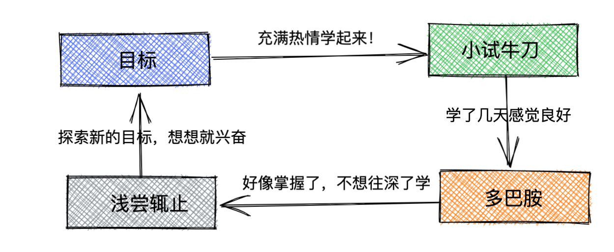

引言
随着生活水平的提高，不少人的目标从原先的解决温饱转变为追求内心充实，但由于现在的时间过得越来越快以及其他外部因素，我们 对很多东西的获取越来越没耐心，例如书店经常会看到《7天精通Java》、《3天掌握XXX》等等之类的书籍，然后大致翻阅后以及经过短暂的实操后，多巴胺充斥着身体，在获得享受后又贪婪的将目光转向下一个目标～我们总在忙，总在不断的学，但是最后大概率会被社会的棒子打回原型，我们其实什么都不会。在获得这样的答案后，我们会变的更贪婪，觉得是自己不够努力，于是更加的拼命学，周而复始直到精疲力竭，最后悲愤高呼“世道如此，悲夫XXX”，因此在这篇文章想表达的是，“欲速则不达，慢就是快”
技术迷张三的悲哀
张三是个对技术充满热情的程序员，在大学时期先接触的Java编程语言，于是照着《7天精通Java》敲完上面的例子后，感觉已经掌握了Java。于是看着安卓风吐火如荼时，也跟着下载个AndroidStudio开发一些小的APP，开发出一些小case后感觉安卓也差不多掌握了，但是如果再继续精进的话就要付出更多的精力，于是在全栈流行的时候，又跟着学习前端Web知识，自己搭建一个完整的Web服务等等。在毕业时，当他信心满满的去面试时，被面试官狠狠的按在地上摩擦～于是他只能选择一个不上不下的公司先干着，这个时候大数据风头来了，于是他趁着风头转了大数据行业，由于之前面试的经验告诉它，学技术一定要深挖，于是呼在简单学习一些基础知识后，就立马吭哧吭哧的啃起了大数据组件的源码，味涩难懂没关系，看不懂就看别人讲解甚至尝试去背，他觉得只要把这些热门的组件的代码都“搞懂”那自己就是香饽饽了，最终他工作上还是四处碰壁，他不服气，觉得是自己懂得不够多，于是乎啃完Hadoop、啃HBase、Kafka、RocksDB、ClickHouse等等，甚至编程语言还去学Python、Rust、Go等等，他觉得自己已经还可以了，但是最终在社会的毒打中，身心疲惫的转行做其他的了
悲从何来
张三很忙，也很努力，但是悲哀的是，他在每一个方向都只学了最简单的知识，并错误的认为自己以为掌握了，实则只是冰上一角。 因此虽然他很努力，但是悲剧是必然的。张三只是宇宙中的一粒沙子，他的理想伴随着宇宙规律堙灭无人知晓，但如果我们在他身上看到了自己的影子，那么我们可能需要注意下，避免这种逃避困难的盲目的努力，这本质上也是一种“奶头乐”。用张一鸣的话来说，“他们为了避开思考，愿意付出一切努力”
解法
-
静，勿燥 这跟 有点矛盾，一句话说清两者的关系“战略上要静，战术上要快”。指导员在抗战时期提出的“论持久战”就是战略上的静，我们知道目的地在那里，但也要承认这段路是比较漫长的，只靠冲刺是永远到达不了的。因此在长远目标定下来后，心要静下来，然后针对眼前的一个个要做的事情，莽起来，大胆去做，因为即便一两件事搞崩了也远不会影响你的最终目标。
-
规划性 在有目标后，要定一个大纲来进行指导，每一个阶段的小方向是什么，再到小方向上要做的事，最后再逐个攻克。在攻克的过程中识别到新的信息后，可以反过来调整计划。
-
跟外界保持联系 要承认的一件事，我们很难独立于这个世界，我们需要得到这个世界的认可从而获得收益例如金钱、权力、名誉等等，因此我们不能闭门造车。要跟世界保持联系，例如学某个技术不要自己埋头硬啃，也要关注一下别的公司业务是如何用的，遇到了哪些问题，一定要记住一件事，你学一个东西一定是要用来解决某个“问题的，因此你要了解这个“问题”。如果只是埋头硬啃除了可能会脱离业务，还可能会钻入一些牛角尖的地方徒徒耗费时间等，因此务必要跟外界保持联系
总结
在最后，跟大家分享一句很喜欢的话，“如果有一天，你不再寻找爱情，只是去爱;你不再渴望成功，只是去做;你不再追求空泛的成长，只是开始修养自己的性情;你的人生一切，才真正开始”